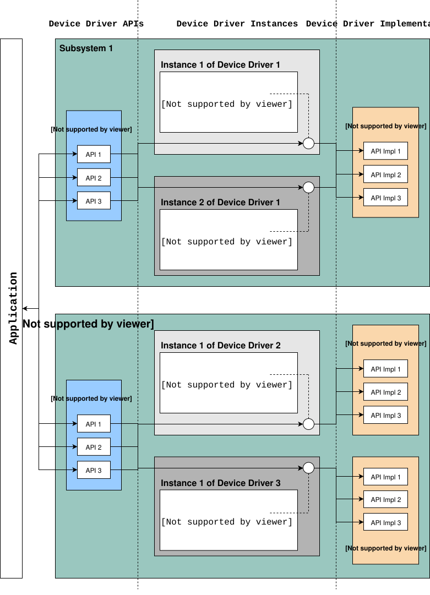

设备驱动模型
简介
Zephyr 内核支持多种设备驱动。某个驱动是否可用取决于开发板和驱动本身。
Zephyr 设备模型为配置系统中的驱动提供了一致的设备模型。设备模型负责初始化配置到系统中的所有驱动。
每种类型的驱动（例如 UART、SPI、I2C）都由一套通用的类型 API 支持。
在该模型中，驱动在初始化期间填入一个指针，指向包含其 API 函数指针的结构体。这些结构体按初始化级别顺序放置在 RAM 段中。


标准驱动
下面列出了所有受支持的开发板配置中都存在的设备驱动。
中断控制器：该设备驱动由内核的中断管理子系统使用。
定时器：该设备驱动由内核的系统时钟和硬件时钟子系统使用。
串行通信：该设备驱动由内核的系统控制台子系统使用。
熵源：该设备驱动为随机数生成器子系统提供熵数据来源。
重要
请使用 随机数 API 函数 获取随机值。不应将 熵函数 直接用作随机数生成器的来源，因为某些硬件实现被设计为随机数生成器的熵种子来源，并不提供密码学安全的随机数流。
同步调用
Zephyr 为多种开发板提供了一组设备驱动。除非特定硬件不提供任何中断，否则每个驱动都应支持基于中断的实现，而不是轮询。
通过设备特定 API（例如 i2c.h 或 spi.h）访问的高层调用通常被设计为同步调用。因此，这些调用应当是阻塞的。
驱动 API
device.h 提供了以下用于设备驱动的 API。这些 API 仅供设备驱动使用，不应在应用程序中使用。
DEVICE_DEFINE()创建设备对象及相关数据结构，包括将其设置为在启动时初始化。
DEVICE_NAME_GET()将设备标识符转换为设备对象的全局标识符。
DEVICE_GET()按名称获取指向设备对象的指针。
DEVICE_DECLARE()声明一个设备对象。当需要前向引用一个尚未定义的设备时使用。
DEVICE_API()包装驱动 API 声明，将其分配到对应的链接器段。任何实现上游驱动类的驱动都必须使用此宏，因为
DEVICE_API_GET和DEVICE_API_IS依赖 API 实例被放置在其类的链接器段中，才能在运行时验证设备的 API 类。
驱动数据结构
设备初始化宏在构建时填充一些数据结构，这些数据结构分为只读部分和运行时可变部分。概括来说包括：
struct device {
const char *name;
const void *config;
const void *api;
void * const data;
};
config 成员用于在构建时设置的只读配置数据，例如内存映射 IO 基地址、IRQ 线号或设备的其他固定物理特性。它就是传给 DEVICE_DEFINE() 及相关宏的 config 指针。
data 结构体保存在 RAM 中，供驱动用于每个实例的运行时状态维护。例如，它可以包含引用计数、信号量、临时缓冲区等。
api 结构体将通用的子系统 API 映射到驱动中设备特定的实现。它通常是只读的，并在构建时填充。下一节将对此进行更详细的介绍。
子系统与 API 结构体
大多数驱动会实现一个与设备无关的子系统 API。应用程序只需针对该通用 API 编程，应用程序代码不依赖于任何特定的驱动实现。
驱动 API 实例必须使用 DEVICE_API() 声明，以便将其分配到对应的 API 链接器段。DEVICE_API_GET 和 DEVICE_API_IS 需要借此在运行时验证设备的 API 是否属于预期的类。
子系统 API 定义通常如下所示：
typedef int (*subsystem_do_this_t)(const struct device *dev, int foo, int bar);
typedef void (*subsystem_do_that_t)(const struct device *dev, void *baz);
__subsystem struct subsystem_driver_api {
subsystem_do_this_t do_this;
subsystem_do_that_t do_that;
};
static inline int subsystem_do_this(const struct device *dev, int foo, int bar)
{
return DEVICE_API_GET(subsystem, dev)->do_this(dev, foo, bar);
}
static inline void subsystem_do_that(const struct device *dev, void *baz)
{
DEVICE_API_GET(subsystem, dev)->do_that(dev, baz);
}
实现某个特定子系统的驱动会定义这些 API 的实际实现，并使用 DEVICE_API() 包装器填充一个 subsystem_driver_api 结构体实例：
static int my_driver_do_this(const struct device *dev, int foo, int bar)
{
...
}
static void my_driver_do_that(const struct device *dev, void *baz)
{
...
}
static DEVICE_API(subsystem, my_driver_api_funcs) = {
.do_this = my_driver_do_this,
.do_that = my_driver_do_that,
};
然后，驱动将 my_driver_api_funcs 作为 api 参数传给 DEVICE_DEFINE()。
备注
由于 api 结构体引用了 API 函数的指针，即使这些函数未被使用，它们也总会被包含在二进制文件中；gc-sections 链接器选项总能看到至少一个对它们的引用。在大多数情况下，要对驱动 API 进行链接时体积优化，需要用 Kconfig 选项来控制可选功能。
API 类继承
一个子系统 API 可以扩展另一个子系统 API，形成父子关系。这使得实现子 API 的设备也能被识别为实现了父 API。例如，I3C 控制器扩展了 I2C API，因此可以用在任何需要 I2C 设备的地方。
要定义子 API，需将父 API 结构体嵌入为子结构体的 第一个成员，并使用 DEVICE_API_EXTENDS 声明这种关系：
__subsystem struct child_driver_api {
struct subsystem_driver_api parent_api;
child_do_extra_t do_extra;
};
DEVICE_API_EXTENDS(child, subsystem, parent_api);
实现子 API 的驱动会同时填充父 API 和子 API 的方法：
static DEVICE_API(child, my_child_api) = {
.parent_api = {
.do_this = my_child_do_this,
.do_that = my_child_do_that,
},
.do_extra = my_child_do_extra,
};
这样一来，DEVICE_API_IS 对子类和父类都会返回 true，并且 DEVICE_API_GET 可以按任一类型获取该 API：
/* Both return true for a child device */
DEVICE_API_IS(subsystem, dev);
DEVICE_API_IS(child, dev);
/* Access through parent API */
DEVICE_API_GET(subsystem, dev)->do_this(dev, foo, bar);
支持多级继承（例如孙 API 扩展子 API，子 API 又扩展父 API）。兄弟关系同样可以正确处理：扩展同一父 API 的两个不同子 API 可以由 DEVICE_API_IS 区分。
设备特定的 API 扩展
有些设备可以被视为某个驱动子系统（例如 GPIO）的实例，但还提供了无法通过标准 API 暴露的额外功能。这类设备将子系统操作与设备特定 API 结合在一起，后者在设备特定的头文件中描述。
设备特定 API 定义通常如下所示：
#include <zephyr/drivers/subsystem.h>
/* When extensions need not be invoked from user mode threads */
int specific_do_that(const struct device *dev, int foo);
/* When extensions must be invokable from user mode threads */
__syscall int specific_from_user(const struct device *dev, int bar);
/* Only needed when extensions include syscalls */
#include <zephyr/syscalls/specific.h>
实现子系统扩展的驱动会同时定义子系统 API 和特定 API 的实际实现：
static int generic_do_this(const struct device *dev, void *arg)
{
...
}
static struct generic_api api {
...
.do_this = generic_do_this,
...
};
/* supervisor-only API is globally visible */
int specific_do_that(const struct device *dev, int foo)
{
...
}
/* syscall API passes through a translation */
int z_impl_specific_from_user(const struct device *dev, int bar)
{
...
}
#ifdef CONFIG_USERSPACE
#include <zephyr/internal/syscall_handler.h>
int z_vrfy_specific_from_user(const struct device *dev, int bar)
{
K_OOPS(K_SYSCALL_SPECIFIC_DRIVER(dev, K_OBJ_DRIVER_GENERIC, &api));
return z_impl_specific_do_that(dev, bar)
}
#include <zephyr/syscalls/specific_from_user_mrsh.c>
#endif /* CONFIG_USERSPACE */
应用程序同时通过子系统 API 和特定 API 使用该设备。
单一驱动，多个实例
某些驱动可能在一个系统中被实例化多次。例如，可能有多个 GPIO 组或多个 UART。驱动的每个实例都有各自不同的 config 结构体和 data 结构体。
为多个驱动实例配置中断是一种特殊情况。如果每个实例需要配置不同的中断线，可以通过每个实例各自的配置函数来实现，因为 IRQ_CONNECT() 的参数必须在构建时可确定。
例如，假设需要配置 my_driver 的两个实例，每个实例使用不同的中断线。在 drivers/subsystem/subsystem_my_driver.h 中：
typedef void (*my_driver_config_irq_t)(const struct device *dev);
struct my_driver_config {
DEVICE_MMIO_ROM;
my_driver_config_irq_t config_func;
};
在公共初始化函数的实现中：
void my_driver_isr(const struct device *dev)
{
/* Handle interrupt */
...
}
int my_driver_init(const struct device *dev)
{
const struct my_driver_config *config = dev->config;
DEVICE_MMIO_MAP(dev, K_MEM_CACHE_NONE);
/* Do other initialization stuff */
...
config->config_func(dev);
return 0;
}
然后在声明特定实例时：
#if CONFIG_MY_DRIVER_0
DEVICE_DECLARE(my_driver_0);
static void my_driver_config_irq_0(const struct device *dev)
{
IRQ_CONNECT(MY_DRIVER_0_IRQ, MY_DRIVER_0_PRI, my_driver_isr,
DEVICE_GET(my_driver_0), MY_DRIVER_0_FLAGS);
}
const static struct my_driver_config my_driver_config_0 = {
DEVICE_MMIO_ROM_INIT(DT_DRV_INST(0)),
.config_func = my_driver_config_irq_0
}
static struct my_data_0;
DEVICE_DEFINE(my_driver_0, MY_DRIVER_0_NAME, my_driver_init,
NULL, &my_data_0, &my_driver_config_0,
POST_KERNEL, MY_DRIVER_0_PRIORITY, &my_api_funcs);
#endif /* CONFIG_MY_DRIVER_0 */
注意这里使用了 DEVICE_DECLARE()，以避免在提供 IRQ 处理函数参数与定义设备本身之间产生循环依赖。
初始化级别
驱动可能依赖其他驱动先完成初始化，或需要使用内核服务。DEVICE_DEFINE() 及相关 API 允许用户指定初始化函数在启动序列中的执行时机。每个驱动都会指定以下三个初始化级别之一：
PRE_KERNEL_1用于没有依赖的设备，例如仅依赖处理器/SoC 内部硬件的设备。由于内核服务尚不可用，这些设备在配置期间不能使用任何内核服务。不过此时中断子系统已经配置好，因此可以设置中断。此级别的初始化函数在中断栈上运行。
PRE_KERNEL_2用于依赖
PRE_KERNEL_1级别中已初始化设备的设备。由于内核服务尚不可用，这些设备在配置期间不能使用任何内核服务。此级别的初始化函数在中断栈上运行。POST_KERNEL用于在配置期间需要内核服务的设备。此级别的初始化函数在内核主任务的上下文中运行。
在每个初始化级别内，可以指定一个相对于同级别其他设备的优先级。优先级以 0 到 999 范围内的整数值指定；数值越小，初始化越早。优先级必须是不带前导零或符号的十进制整数字面量（例如 32），或等价的符号名（例如 \#define MY_INIT_PRIO 32）；不允许 使用符号表达式（例如 CONFIG_KERNEL_INIT_PRIORITY_DEFAULT + 5）。
驱动和其他系统工具可以使用 k_is_pre_kernel() 函数判断启动过程是否仍处于内核启动前状态。
延迟初始化
设备的初始化也可以推迟到稍后进行。在这种情况下，Zephyr 不会在启动时自动初始化该设备，而是在应用程序调用 device_init() 时初始化。要推迟某个设备驱动的初始化，请在 DTS 文件中相应的设备节点上添加 zephyr,deferred-init 属性。例如：
/ {
a-driver@40000000 {
reg = <0x40000000 0x1000>;
zephyr,deferred-init;
};
};
系统驱动
某些情况下，你可能只需要在启动时运行一个函数。这时可以使用 SYS_INIT。该宏不接受任何配置或运行时数据结构，之后也无法按名称获取设备指针。初始化级别和优先级方面的设备规则同样适用。
查看初始化序列
使用 DEVICE_DEFINE（或其任何变体）和 SYS_INIT 声明的设备驱动会在启动时被处理，相应的初始化函数会按照指定的级别和优先级依次调用。
有时需要查看链接器最终生成的初始化函数调用序列。为此，可以使用 initlevels CMake 目标，例如 west build -t initlevels。
错误处理
一般来说，除非预期失败会在正常运行过程中发生（例如存储设备已满），否则最好使用 __ASSERT() 宏，而不是传播返回值。错误的参数、编程错误、一致性检查、异常/不可恢复的故障等，都应通过断言处理。
当适合返回错误状态供调用者检查时，成功应返回 0，失败应返回 POSIX errno.h 错误码。详情请参阅 system_errno。
内存映射
在某些系统上，外设内存映射 I/O（MMIO）区域的线性地址无法在构建时确定：
I/O 范围必须在运行时从总线上探测，例如 PCI Express
内存管理单元（MMU）处于启用状态，MMIO 范围的物理地址必须映射到页表中由内核确定的某个虚拟内存位置。
这类系统必须在 RAM 中保存 MMIO 范围的信息，并在驱动的初始化函数中建立映射。其他系统则无需关心这一点，可以直接使用来自 DTS 的 MMIO 物理地址，也不需要为其分配任何基于 RAM 的存储。
对于可能需要处理这种情况的驱动，系统在 DEVICE_MMIO 范围下定义了一组 API，以及一个映射函数 device_map()。
具有一个 MMIO 区域的设备模型驱动
最简单的情况是驱动只需维护一个 MMIO 区域。这类驱动需要在其 config_info 和 driver_data 结构体的定义中使用 DEVICE_MMIO_ROM 和 DEVICE_MMIO_RAM 宏，并使用 DEVICE_MMIO_ROM_INIT 从 DTS 初始化 config_info。在初始化函数中调用 DEVICE_MMIO_MAP()：
struct my_driver_config {
DEVICE_MMIO_ROM; /* Must be first */
...
}
struct my_driver_dev_data {
DEVICE_MMIO_RAM; /* Must be first */
...
}
const static struct my_driver_config my_driver_config_0 = {
DEVICE_MMIO_ROM_INIT(DT_DRV_INST(...)),
...
}
int my_driver_init(const struct device *dev)
{
...
DEVICE_MMIO_MAP(dev, K_MEM_CACHE_NONE);
...
}
int my_driver_some_function(const struct device *dev)
{
...
/* Write some data to the MMIO region */
sys_write32(0xDEADBEEF, DEVICE_MMIO_GET(dev));
...
}
这些宏的具体展开方式取决于配置。在没有 MMU 或 PCI-e 的设备上，DEVICE_MMIO_MAP 和 DEVICE_MMIO_RAM 展开为空。
具有多个 MMIO 区域的设备模型驱动
有些驱动可能有多个 MMIO 区域。此外，有些驱动可能已经实现了某种形式的继承，要求将其他数据放在 config_info 和 driver_data 结构体的最前面。
这种情况可以使用 DEVICE_MMIO_NAMED 系列宏来处理。这些宏要求定义 DEV_CFG() 和 DEV_DATA() 宏，用于获取指向驱动 config_info 或 dev_data 结构体的正确类型的指针。例如：
struct my_driver_config {
...
DEVICE_MMIO_NAMED_ROM(corge);
DEVICE_MMIO_NAMED_ROM(grault);
...
}
struct my_driver_dev_data {
...
DEVICE_MMIO_NAMED_RAM(corge);
DEVICE_MMIO_NAMED_RAM(grault);
...
}
#define DEV_CFG(_dev) \
((const struct my_driver_config *)((_dev)->config))
#define DEV_DATA(_dev) \
((struct my_driver_dev_data *)((_dev)->data))
const static struct my_driver_config my_driver_config_0 = {
...
DEVICE_MMIO_NAMED_ROM_INIT(corge, DT_DRV_INST(...)),
DEVICE_MMIO_NAMED_ROM_INIT(grault, DT_DRV_INST(...)),
...
}
int my_driver_init(const struct device *dev)
{
...
DEVICE_MMIO_NAMED_MAP(dev, corge, K_MEM_CACHE_NONE);
DEVICE_MMIO_NAMED_MAP(dev, grault, K_MEM_CACHE_NONE);
...
}
int my_driver_some_function(const struct device *dev)
{
...
/* Write some data to the MMIO regions */
sys_write32(0xDEADBEEF, DEVICE_MMIO_GET(dev, grault));
sys_write32(0xF0CCAC1A, DEVICE_MMIO_GET(dev, corge));
...
}
同一设备树节点中具有多个 MMIO 区域的设备模型驱动
有些驱动可能在同一个设备树设备节点中定义了多个 MMIO 区域，并使用 reg-names 属性加以区分，例如：
/dts-v1/;
/ {
a-driver@40000000 {
reg = <0x40000000 0x1000>,
<0x40001000 0x1000>;
reg-names = "corge", "grault";
};
};
这种情况可以按上一节所述的方式处理，只是改用 DEVICE_MMIO_NAMED_ROM_INIT_BY_NAME 宏。因此唯一的区别在于驱动的配置结构体：
const static struct my_driver_config my_driver_config_0 = {
...
DEVICE_MMIO_NAMED_ROM_INIT_BY_NAME(corge, DT_DRV_INST(...)),
DEVICE_MMIO_NAMED_ROM_INIT_BY_NAME(grault, DT_DRV_INST(...)),
...
}
不使用 Zephyr 设备模型的驱动
有些驱动或类似驱动的代码可能不使用 Zephyr 的设备模型，必须为 MMIO 数据另行安排存储。例如定时器驱动或中断控制器代码。
这种情况可以使用 DEVICE_MMIO_TOPLEVEL 系列宏来处理，例如：
DEVICE_MMIO_TOPLEVEL_STATIC(my_regs, DT_DRV_INST(..));
void some_init_code(...)
{
...
DEVICE_MMIO_TOPLEVEL_MAP(my_regs, K_MEM_CACHE_NONE);
...
}
void some_function(...)
...
sys_write32(DEVICE_MMIO_TOPLEVEL_GET(my_regs), 0xDEADBEEF);
...
}
不使用 DTS 的驱动
有些驱动可能不从 DTS 获取 MMIO 物理地址，例如 PCI-E 的情况。此时可以直接使用 device_map() 函数：
void some_init_code(...)
{
...
struct pcie_bar mbar;
bool bar_found = pcie_get_mbar(bdf, index, &mbar);
device_map(DEVICE_MMIO_RAM_PTR(dev), mbar.phys_addr, mbar.size, K_MEM_CACHE_NONE);
...
}
在这些情况下，可以省略 DEVICE_MMIO_ROM 指令。
API 参考
- device_model